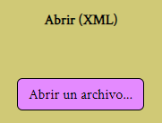
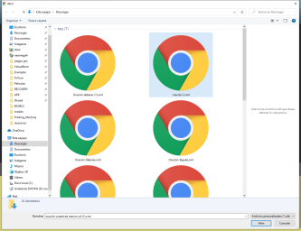
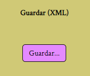
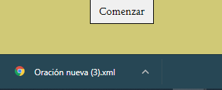
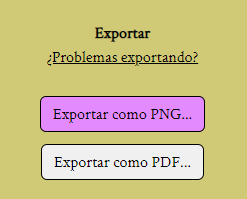

Acciones sobre archivos
Abrir un archivo previamente guardado
Haga click en el botón "Abrir un archivo" y después busque el archivo que pretende abrir


Si todo ha ido bien la oración aparecerá en pantalla, en caso contrario el archivo XML está corrupto o no es un proyecto de Lemon Ink.
Guardar la oración en un archivo de texto
Haga click en el botón "Guardar..." y el archivo se descargará en su navegador, notará que aparece algo como esto (depende del navegador que esté usando, en este caso Chrome).


Si todo ha ido bien la oración aparecerá en pantalla, en caso contrario el archivo XML está corrupto o no es un proyecto de Lemon Ink.
Exportar
Haga click en el "Exportar como PNG..." o como PDF (El resultado será mejor y más ligero en PNG) para descargar la oración en un formato listo para imprimir o enviar.

Es probable que tengas problemas al exportar debido a varios motivos, si es así por favor visita el apartado Exportar